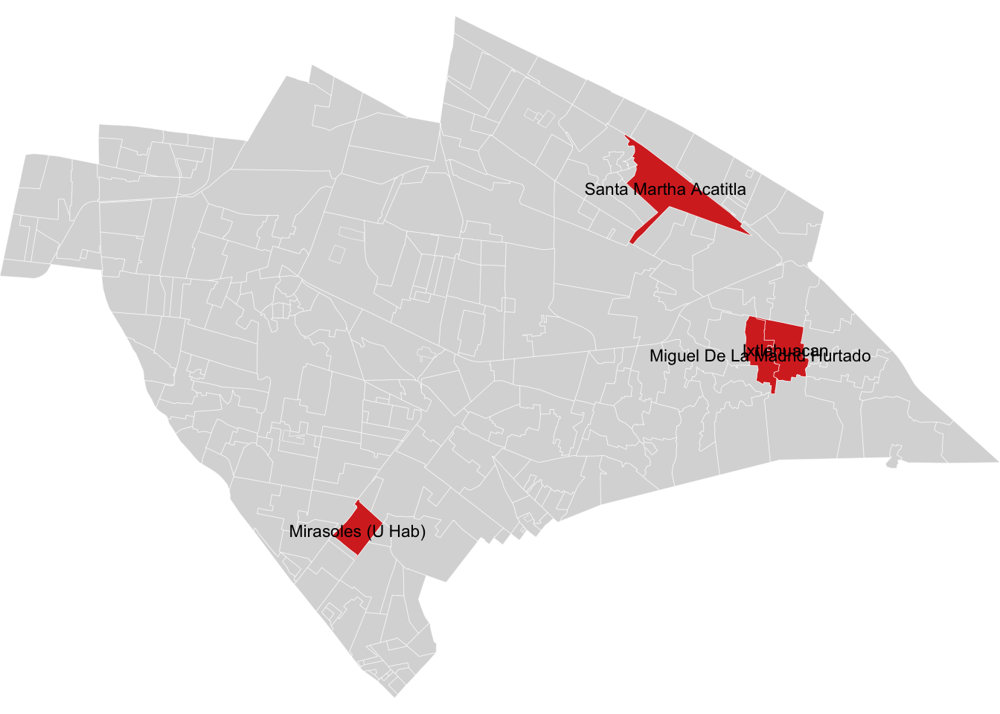
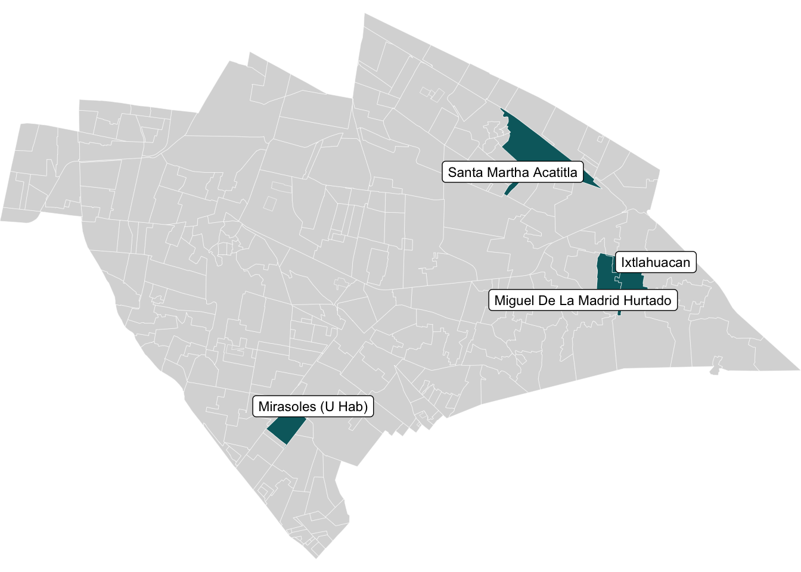
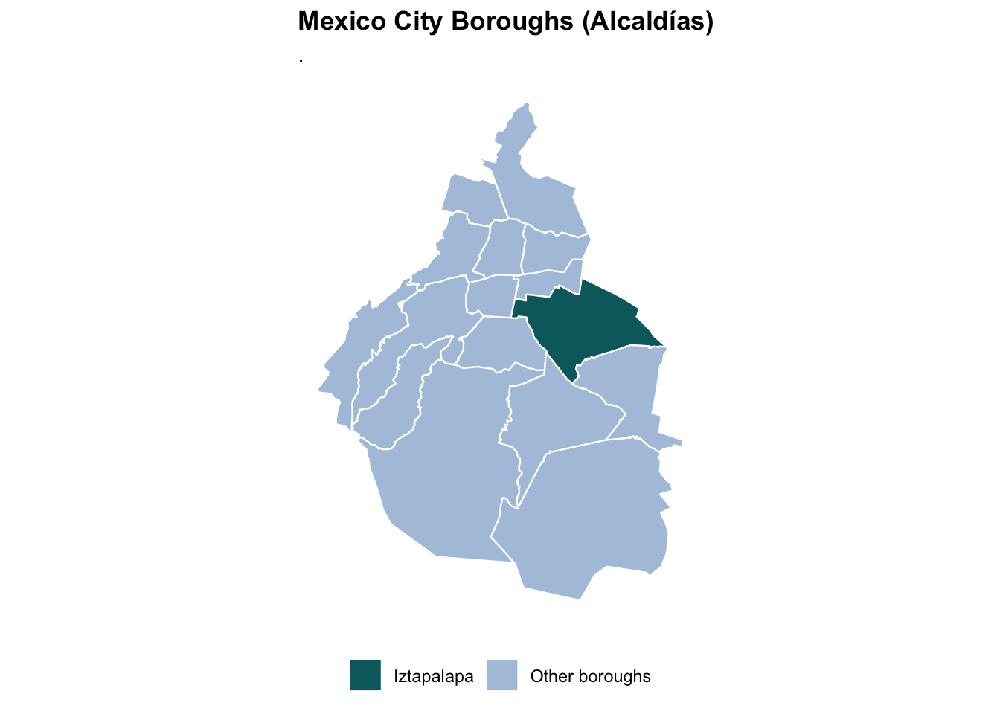

Last updated: 2026-03-15
Checks: 6 1
Knit directory: QUAIL-Mex/
This reproducible R Markdown analysis was created with workflowr (version 1.7.1). The Checks tab describes the reproducibility checks that were applied when the results were created. The Past versions tab lists the development history.
The R Markdown is untracked by Git. To know which version of the R
Markdown file created these results, you’ll want to first commit it to
the Git repo. If you’re still working on the analysis, you can ignore
this warning. When you’re finished, you can run
wflow_publish to commit the R Markdown file and build the
HTML.
Great job! The global environment was empty. Objects defined in the global environment can affect the analysis in your R Markdown file in unknown ways. For reproduciblity it’s best to always run the code in an empty environment.
The command set.seed(20241009) was run prior to running
the code in the R Markdown file. Setting a seed ensures that any results
that rely on randomness, e.g. subsampling or permutations, are
reproducible.
Great job! Recording the operating system, R version, and package versions is critical for reproducibility.
Nice! There were no cached chunks for this analysis, so you can be confident that you successfully produced the results during this run.
Great job! Using relative paths to the files within your workflowr project makes it easier to run your code on other machines.
Great! You are using Git for version control. Tracking code development and connecting the code version to the results is critical for reproducibility.
The results in this page were generated with repository version bcd8552. See the Past versions tab to see a history of the changes made to the R Markdown and HTML files.
Note that you need to be careful to ensure that all relevant files for
the analysis have been committed to Git prior to generating the results
(you can use wflow_publish or
wflow_git_commit). workflowr only checks the R Markdown
file, but you know if there are other scripts or data files that it
depends on. Below is the status of the Git repository when the results
were generated:
Ignored files:
Ignored: .DS_Store
Ignored: .RData
Ignored: .Rhistory
Ignored: .Rproj.user/
Ignored: analysis/.DS_Store
Ignored: analysis/.RData
Ignored: analysis/.Rhistory
Ignored: analysis/Hrs_by_HWISE score.png
Ignored: analysis/stacked_barplot.png
Ignored: code/.DS_Store
Ignored: data/.DS_Store
Ignored: output/.DS_Store
Untracked files:
Untracked: .claude/
Untracked: analysis/99.Maps.Rmd
Untracked: colonias_names.csv
Untracked: output/TableS1.2_missing_data.docx
Untracked: output/TableS2_HWISE_PSS_overall.docx
Untracked: output/TableS3_HWISE_PSS_by_season.docx
Untracked: output/TableS4_characteristics_by_HWISE.docx
Untracked: output/TableS5_water_supply.docx
Untracked: output/TableS6_water_by_neighborhood.docx
Untracked: output/TableS7_water_by_season.docx
Untracked: output/~$bleS2_HWISE_PSS_overall.docx
Unstaged changes:
Modified: analysis/04.Descriptive_stats.Rmd
Deleted: analysis/Maps.Rmd
Modified: data/01.SCREENING.csv
Modified: data/01.Screening_clean.csv
Modified: data/01.conflicts_to_review.csv
Modified: data/01.conflicts_to_review_V2.csv
Modified: data/02.Merged_Screening_HWISE_PSS.csv
Deleted: data/03.Merged_Final.csv
Modified: data/03.Merged_Q1-6.csv
Modified: output/Table1_sample_characteristics.docx
Modified: output/TableS1_full_descriptives.docx
Note that any generated files, e.g. HTML, png, CSS, etc., are not included in this status report because it is ok for generated content to have uncommitted changes.
There are no past versions. Publish this analysis with
wflow_publish() to start tracking its development.
knitr::opts_chunk$set(echo = TRUE)
library(dplyr)
library(tidyr)
library(stringr)
library(gtsummary)
library(gt)
library(flextable)
library(purrr)
library(officer)
library(sf)
library(ggplot2)
library(geodata)
data_path <- "./data"
MISSING_CODES <- c(999, 888, 777, 666, 555, 444, 333)
# Helper: convert sentinel codes to NA for descriptive stats
clean_for_table <- function(x) {
x_num <- suppressWarnings(as.numeric(as.character(x)))
ifelse(x_num %in% MISSING_CODES | is.na(x_num), NA, x_num)
}
# Helper: flag sentinel codes in free-text / character fields
SENTINEL_STRINGS <- as.character(c(999, 888, 777, 666, 555, 444, 333))
is_sentinel_str <- function(x) {
str_trim(as.character(x)) %in% SENTINEL_STRINGS
}df <- read.csv(file.path(data_path, "03.Merged_Q1-6.csv"),
stringsAsFactors = FALSE,
na.strings = c(""))
cat("Dimensions:", dim(df), "\n")Dimensions: 399 122 cat("Participants:", nrow(df), "\n")Participants: 399 target_colonias <- unique(df$D_LOC)
unique(df$D_LOC) [1] NA
[2] "Miguel De La Madrid Hurtado"
[3] "Lomas de Zaragoza"
[4] "Ixtlahuacan"
[5] "Santa Martha Acatitla"
[6] "San Miguel Teotongo"
[7] "Xalpe Primera"
[8] "Lomas de zaragoza"
[9] "Colonia de al Lado"
[10] "333"
[11] "V. Hab Miranolen"
[12] "Mirasoles (U Hab)"
[13] "Unidad nacional el Parque las Antenas"
[14] "El Rosario"
[15] "Lomas De Zaragoza"
[16] "San Miguel Teotongo I"
[17] "Jardines De San Lorenzo"
[18] "1a Ampliacion Santiago Acahualtepec"
[19] "Pueblo San Lorenzo Tezonco"
[20] "Guadalupe (Barr)"
[21] "San Antonio (Barr)"
[22] "San Antonio"
[23] "San Lorenzo Tezonco"
[24] "San Miguel Teotongo Ii"
[25] "Lomas De San Lorenzo I"
[26] "Unidad Mirasoles"
[27] "C Huachinango"
[28] "Jose Lopez Portillo I"
[29] "San Lorenzo Tezonco (Pblo)"
[30] "San Lorenzo Tezonco (Barr)"
[31] "El Mirador"
[32] "Lomas De San Lorenzo Ii"
[33] "Valle De San Lorenzo I"
[34] "San Lorenzo"
[35] "Jose Lopez Portillo Ii"
[36] "Campestre Potrero"
[37] "El Vergel"
[38] "San Pablo (Barr)"
[39] "2a Ampliacion Santiago Acahualtepec I"
[40] "Santiago Acahualtepec (Pblo)"
[41] "Lomas De La Estancia I"
[42] "Tenorios"
[43] "El Molino"
[44] "San Lorenzo Tezonco I (U Hab)" colonias <- st_read("./data/GeoJson/georef-mexico-colonia.geojson")Reading layer `georef-mexico-colonia' from data source
`/Users/palomacz/Documents/GitHub/QUAIL-Mex/data/GeoJson/georef-mexico-colonia.geojson'
using driver `GeoJSON'
Simple feature collection with 295 features and 10 fields
Geometry type: POLYGON
Dimension: XY
Bounding box: xmin: -99.14021 ymin: 19.28484 xmax: -98.95999 ymax: 19.40088
Geodetic CRS: WGS 84# Check column names
names(colonias) [1] "geo_point_2d" "year" "col_area_code" "col_type"
[5] "sta_code" "sta_name" "mun_code" "mun_name"
[9] "col_code" "col_name" "geometry" # Create a variable to highlight Sinatel
colonias <- colonias %>%
mutate(highlight = ifelse(col_name == "Sinatel", "Sinatel", "Other"))
target_colonias <- c(
"Mirasoles (U Hab)",
"Lomas Estrella 2a Secc I",
"Lomas De Zaragoza",
"Lomas De La Estancia Ii",
"Lomas De San Lorenzo I",
"Lomas De San Lorenzo Ii",
"San Antonio (Barr)",
"Santiago Acahualtepec (Pblo)",
"2a Ampliacion Santiago Acahualtepec Ii",
"San Miguel Teotongo I",
"San Miguel Teotongo Ii",
"San Miguel Teotongo Iii",
"San Miguel Teotongo Iv",
"Santa Martha Acatitla",
"Lomas De La Estancia I",
"Jose Lopez Portillo I",
"Jose Lopez Portillo Ii"
)
target_colonias <- df$D_LOC[order(unique(df$D_LOC))]
labels_sf <- colonias %>%
filter(col_name %in% target_colonias)
colonias_highlight <- colonias %>%
mutate(
highlight = ifelse(col_name %in% target_colonias, "Selected", "Other")
)
# Plot map
ggplot() +
geom_sf(data = colonias_highlight,
aes(fill = highlight),
color = "white",
size = 0.1) +
geom_sf_text(data = labels_sf,
aes(label = col_name),
size = 3) +
scale_fill_manual(values = c(
"Selected" = "#d73027",
"Other" = "gray85"
)) +
coord_sf(expand = FALSE) +
theme_void() +
theme(legend.position = "none")Warning in st_point_on_surface.sfc(sf::st_zm(x)): st_point_on_surface may not
give correct results for longitude/latitude data
library(ggrepel)
centroids <- st_centroid(labels_sf)Warning: st_centroid assumes attributes are constant over geometriesggplot() +
geom_sf(data = colonias_highlight,
aes(fill = highlight),
color = "white",
size = 0.1) +
geom_label_repel(
data = centroids,
aes(geometry = geometry, label = col_name),
stat = "sf_coordinates",
size = 3
) +
scale_fill_manual(values = c(
"Selected" = "#05686D",
"Other" = "gray85"
)) +
coord_sf(expand = FALSE) +
theme_void() +
theme(legend.position = "none")Warning in st_point_on_surface.sfc(sf::st_zm(x)): st_point_on_surface may not
give correct results for longitude/latitude data
# Download Mexico administrative level 2 (municipalities/alcaldías)
mex_adm2 <- geodata::gadm(country = "MEX", level = 2, path = tempdir(), resolution = 1) |>
st_as_sf()
# Filter to Mexico City (CDMX) - NAME_1 varies, try "Ciudad de México" or "Distrito Federal"
cdmx <- mex_adm2 |>
filter(NAME_1 == "Distrito Federal")
# Add highlight column
cdmx <- cdmx |>
mutate(highlight = ifelse(NAME_2 == "Iztapalapa", "Iztapalapa", "Other boroughs"))
head(cdmx)Simple feature collection with 6 features and 14 fields
Geometry type: POLYGON
Dimension: XY
Bounding box: xmin: -99.36492 ymin: 19.23257 xmax: -99.09908 ymax: 19.51514
Geodetic CRS: WGS 84
GID_2 GID_0 COUNTRY GID_1 NAME_1 NL_NAME_1
1 MEX.9.1_2 MEX México MEX.9_1 Distrito Federal <NA>
2 MEX.9.2_2 MEX México MEX.9_1 Distrito Federal <NA>
3 MEX.9.3_2 MEX México MEX.9_1 Distrito Federal <NA>
4 MEX.9.4_2 MEX México MEX.9_1 Distrito Federal <NA>
5 MEX.9.5_2 MEX México MEX.9_1 Distrito Federal <NA>
6 MEX.9.6_2 MEX México MEX.9_1 Distrito Federal <NA>
NAME_2 VARNAME_2 NL_NAME_2 TYPE_2 ENGTYPE_2 CC_2 HASC_2
1 Álvaro Obregón <NA> <NA> Município Municipality <NA> <NA>
2 Azcapotzalco <NA> <NA> Município Municipality <NA> <NA>
3 Benito Juárez <NA> <NA> Município Municipality <NA> <NA>
4 Coyoacán <NA> <NA> Município Municipality <NA> <NA>
5 Cuajimalpa de Morelos <NA> <NA> Município Municipality <NA> <NA>
6 Cuauhtémoc <NA> <NA> Município Municipality <NA> <NA>
geometry highlight
1 POLYGON ((-99.18906 19.3955... Other boroughs
2 POLYGON ((-99.15718 19.5028... Other boroughs
3 POLYGON ((-99.17171 19.3595... Other boroughs
4 POLYGON ((-99.20575 19.3056... Other boroughs
5 POLYGON ((-99.24765 19.3859... Other boroughs
6 POLYGON ((-99.16371 19.4564... Other boroughs# Plot
ggplot(cdmx) +
geom_sf(aes(fill = highlight), color = "white", linewidth = 0.4) +
scale_fill_manual(
values = c("Iztapalapa" = "#05686D", "Other boroughs" = "#B0C4DE"),
name = NULL
) +
labs(
title = "Mexico City Boroughs (Alcaldías)",
subtitle = "."
) +
theme_minimal() +
theme(
legend.position = "bottom",
plot.title = element_text(face = "bold"),
axis.text = element_blank(),
axis.ticks = element_blank(),
panel.grid = element_blank()
)
sessionInfo()R version 4.5.3 (2026-03-11)
Platform: aarch64-apple-darwin20
Running under: macOS Tahoe 26.3.1
Matrix products: default
BLAS: /Library/Frameworks/R.framework/Versions/4.5-arm64/Resources/lib/libRblas.0.dylib
LAPACK: /Library/Frameworks/R.framework/Versions/4.5-arm64/Resources/lib/libRlapack.dylib; LAPACK version 3.12.1
locale:
[1] en_US.UTF-8/en_US.UTF-8/en_US.UTF-8/C/en_US.UTF-8/en_US.UTF-8
time zone: America/Detroit
tzcode source: internal
attached base packages:
[1] stats graphics grDevices utils datasets methods base
other attached packages:
[1] ggrepel_0.9.6 geodata_0.6-6 terra_1.8-93 ggplot2_4.0.0
[5] sf_1.1-0 officer_0.7.3 purrr_1.0.4 flextable_0.9.11
[9] gt_1.0.0 gtsummary_2.5.0 stringr_1.5.1 tidyr_1.3.1
[13] dplyr_1.2.0
loaded via a namespace (and not attached):
[1] gtable_0.3.6 xfun_0.52 bslib_0.9.0
[4] vctrs_0.7.1 tools_4.5.3 generics_0.1.3
[7] tibble_3.2.1 proxy_0.4-27 pkgconfig_2.0.3
[10] KernSmooth_2.23-26 data.table_1.17.0 RColorBrewer_1.1-3
[13] S7_0.2.0 uuid_1.2-1 lifecycle_1.0.5
[16] compiler_4.5.3 farver_2.1.2 git2r_0.36.2
[19] textshaping_1.0.0 codetools_0.2-20 httpuv_1.6.16
[22] fontquiver_0.2.1 fontLiberation_0.1.0 htmltools_0.5.8.1
[25] class_7.3-23 sass_0.4.10 yaml_2.3.10
[28] later_1.4.2 pillar_1.10.2 jquerylib_0.1.4
[31] openssl_2.3.2 classInt_0.4-11 cachem_1.1.0
[34] wk_0.9.5 fontBitstreamVera_0.1.1 tidyselect_1.2.1
[37] zip_2.3.3 digest_0.6.37 stringi_1.8.7
[40] rprojroot_2.1.1 fastmap_1.2.0 grid_4.5.3
[43] cli_3.6.5 magrittr_2.0.3 patchwork_1.3.1
[46] e1071_1.7-16 withr_3.0.2 rappdirs_0.3.3
[49] gdtools_0.5.0 scales_1.4.0 promises_1.3.2
[52] rmarkdown_2.29 workflowr_1.7.1 askpass_1.2.1
[55] ragg_1.4.0 evaluate_1.0.3 knitr_1.50
[58] s2_1.1.9 rlang_1.1.7 Rcpp_1.0.14
[61] glue_1.8.0 DBI_1.2.3 xml2_1.3.8
[64] rstudioapi_0.17.1 jsonlite_2.0.0 R6_2.6.1
[67] units_1.0-0 systemfonts_1.3.2 fs_1.6.6